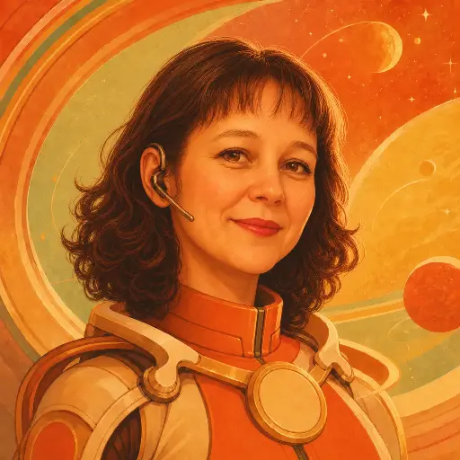

Your personal digital assistant
Alarisa is a private, human-controlled digital assistant — your digital twin in the online environment. It runs on your VPS and is accessed via mobile PWA, providing an always-active runtime that receives signals, maintains state, and orchestrates approved capabilities on your behalf.
Your personal assistant lives on your own VPS, always online. Access it from your mobile through the PWA — your private 24/7 digital presence.
Personal goals, preferences, constraints, and active work are preserved for continuity across sessions.
AI agents, tools, workflows, and external services — all coordinated as approved capabilities mature.
Actions that may harm the Principal require explicit confirmation unless a standing instruction already applies.
Planned capabilities
Core promise
Alarisa acts as your digital twin — it interprets your intent in context, preserves your personal memory, and executes digital work through approved capabilities. It always returns to you for guidance when understanding or risk requires it, never acting beyond your authority.